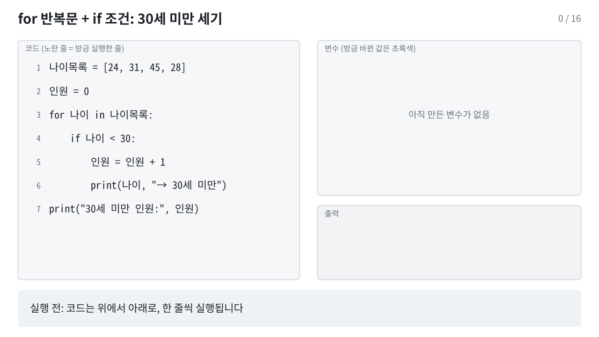
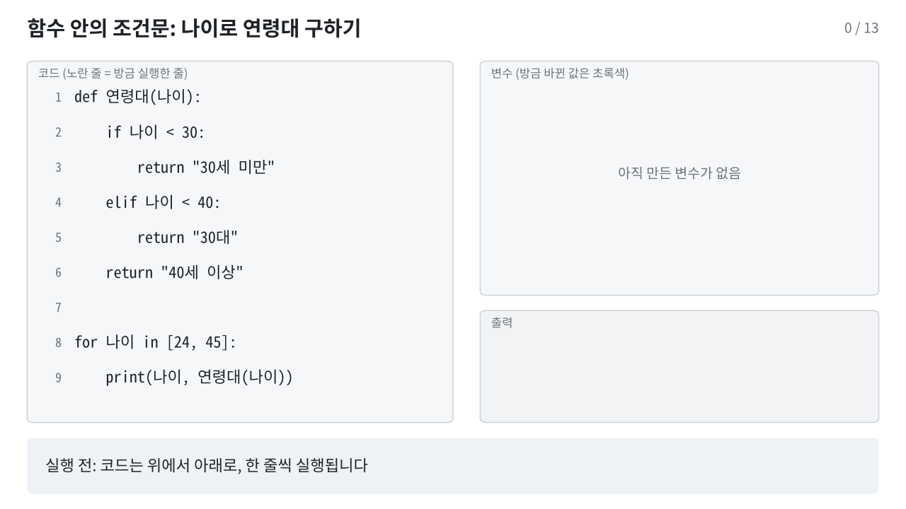

print("안녕하세요")
print(1 + 2)안녕하세요
3이 장에서는 데이터 분석에 필요한 파이썬 문법을 익힙니다. 값의 종류(자료형), 계산(연산자), 여러 값을 묶는 방법(리스트, 딕셔너리), 조건에 따라 다르게 처리하기(조건문), 같은 일을 반복하기(반복문) 순서로 진행합니다.
Colab 노트북은 코드 칸(셀)과 글 칸으로 이루어져 있습니다. 코드 칸을 누르고 Shift + Enter를 누르면 그 칸이 실행되고 결과가 바로 아래에 나옵니다.
print("안녕하세요")
print(1 + 2)안녕하세요
3# 뒤에 쓴 내용은 주석입니다. 실행되지 않고, 코드에 메모를 남길 때 씁니다.
# 이 줄은 실행되지 않습니다
print("주석 다음 줄은 실행됩니다")주석 다음 줄은 실행됩니다칸의 마지막 줄이 값이면 print() 없이도 그 값이 출력됩니다.
3 * 412변수는 값에 이름을 붙여 저장해 두는 것입니다.
수용번호 = 1001
나이 = 24
죄명 = "절도"
print(수용번호, 나이, 죄명)1001 24 절도=는 “같다”는 뜻이 아니라 오른쪽 값을 왼쪽 이름에 저장한다는 뜻입니다.형기_개월).나이 = 나이 + 1
print(나이)25값에는 종류가 있습니다. 데이터를 다룰 때 가장 많이 쓰는 네 가지는 다음과 같습니다.
| 자료형 | 이름 | 예 | 교정 데이터에서 |
|---|---|---|---|
int |
정수 | 24, 1001 |
나이, 형기(개월), 수용번호 |
float |
실수 | 126.9 |
수용률 |
str |
문자열 | "절도" |
죄명, 시설 이름 |
bool |
참거짓 | True, False |
직업훈련 참여 여부 |
type()으로 값의 종류를 확인할 수 있습니다.
나이 = 24
수용률 = 126.9
죄명 = "절도"
직업훈련 = False
print(type(나이))
print(type(수용률))
print(type(죄명))
print(type(직업훈련))<class 'int'>
<class 'float'>
<class 'str'>
<class 'bool'>문자열은 따옴표로 감쌉니다. 24는 숫자이고 "24"는 글자입니다. 둘은 다른 값입니다.
print(24 == "24")False| 연산자 | 뜻 | 예 | 결과 |
|---|---|---|---|
+ |
더하기 | 30 + 6 |
36 |
- |
빼기 | 30 - 6 |
24 |
* |
곱하기 | 30 * 2 |
60 |
/ |
나누기 | 30 / 12 |
2.5 |
// |
몫 | 30 // 12 |
2 |
% |
나머지 | 30 % 12 |
6 |
** |
거듭제곱 | 2 ** 3 |
8 |
몫(//)과 나머지(%)를 쓰면 형기 30개월을 “2년 6개월”로 바꿀 수 있습니다.
형기_개월 = 30
년 = 형기_개월 // 12
개월 = 형기_개월 % 12
print(년, "년", 개월, "개월")2 년 6 개월2025년 전국 교정시설의 수용 정원은 50,614명, 1일 평균 수용인원은 63,680명이었습니다(2026 교정통계연보). 수용률을 계산해 봅니다.
정원 = 50614
현원 = 63680
수용률 = 현원 / 정원 * 100
print(수용률)
print(round(수용률, 1))125.81499189947445
125.8곱셈과 나눗셈이 덧셈과 뺄셈보다 먼저 계산됩니다. 먼저 계산할 부분은 괄호로 묶습니다.
print(현원 - 정원) # 정원을 넘는 인원
print((현원 - 정원) / 정원 * 100) # 정원 대비 초과 비율(%)13066
25.814991899474453비교 연산의 결과는 True 또는 False입니다.
| 연산자 | 뜻 |
|---|---|
== |
같다 |
!= |
다르다 |
>, >= |
크다, 크거나 같다 |
<, <= |
작다, 작거나 같다 |
나이 = 24
죄명 = "절도"
print(나이 < 30)
print(나이 == 30)
print(죄명 == "사기")
print(죄명 != "사기")True
False
False
True=는 저장, ==는 같은지 비교입니다. 처음에 가장 많이 헷갈리는 부분입니다.
| 연산자 | 뜻 |
|---|---|
and |
둘 다 참이면 참 |
or |
하나라도 참이면 참 |
not |
참과 거짓을 뒤집음 |
나이 = 24
징벌횟수 = 2
직업훈련 = False
print(나이 < 30 and 징벌횟수 > 0)
print(나이 < 30 or 징벌횟수 > 3)
print(not 직업훈련)True
True
True문자열끼리 +로 이어 붙이고, *로 반복할 수 있습니다.
시설 = "A" + "교도소"
print(시설)
print("-" * 20)A교도소
--------------------문자열 앞에 f를 붙이면 { } 안에 변수 값을 넣을 수 있습니다.
print(f"{시설}의 수용률은 {round(수용률, 1)}%입니다")A교도소의 수용률은 125.8%입니다자료형을 바꿔야 할 때가 있습니다. 엑셀이나 CSV에서 읽은 숫자가 글자로 들어와 있는 경우가 대표적입니다.
나이_문자 = "24"
나이_문자 + 1--------------------------------------------------------------------------- TypeError Traceback (most recent call last) Cell In[15], line 2 1 나이_문자 = "24" ----> 2 나이_문자 + 1 TypeError: can only concatenate str (not "int") to str
위 칸은 일부러 오류가 나게 만든 코드입니다. 오류 메시지의 마지막 줄을 읽으면 원인을 알 수 있습니다. 여기서는 글자(str)와 숫자(int)를 더할 수 없다는 뜻입니다. int()로 숫자로 바꾸면 계산됩니다.
print(int(나이_문자) + 1)
print(str(1001) + "번")
print(float("126.9"))25
1001번
126.9여러 값을 순서대로 묶을 때는 리스트를 씁니다. 대괄호 [ ] 안에 쉼표로 구분해 넣습니다.
나이목록 = [24, 31, 45, 28, 52]
print(나이목록)[24, 31, 45, 28, 52]위치(인덱스)로 값을 꺼냅니다. 위치는 0부터 셉니다.
print(나이목록[0]) # 첫 번째 값
print(나이목록[1]) # 두 번째 값
print(나이목록[-1]) # 마지막 값
print(나이목록[1:3]) # 두 번째부터 세 번째까지 (3번 위치는 포함하지 않음)24
31
52
[31, 45]리스트에 자주 쓰는 함수입니다.
print(len(나이목록)) # 개수
print(sum(나이목록)) # 합계
print(max(나이목록)) # 최댓값
print(min(나이목록)) # 최솟값
print(sum(나이목록) / len(나이목록)) # 평균5
180
52
24
36.0값을 추가하거나 들어 있는지 확인할 수 있습니다.
나이목록.append(37)
print(나이목록)
print(37 in 나이목록)[24, 31, 45, 28, 52, 37]
True딕셔너리는 “이름표: 값” 쌍을 묶습니다. 수용자 한 명의 정보를 담기에 알맞습니다.
수용자 = {
"수용번호": 1001,
"시설": "A교도소",
"나이": 24,
"죄명": "절도",
"징벌횟수": 2,
}
print(수용자["죄명"])
print(수용자["나이"])절도
24값을 바꾸거나 새 항목을 추가할 수 있습니다.
수용자["징벌횟수"] = 3 # 값 바꾸기
수용자["직업훈련"] = "N" # 새 항목 추가
print(수용자){'수용번호': 1001, '시설': 'A교도소', '나이': 24, '죄명': '절도', '징벌횟수': 3, '직업훈련': 'N'}표의 한 행은 딕셔너리 하나와 같습니다. 2장에서 다룰 pandas의 표(DataFrame)도 열 이름을 이름표처럼 써서 값을 꺼냅니다.
조건에 따라 다른 코드를 실행할 때 if를 씁니다.
나이 = 24
if 나이 < 30:
print("30세 미만")
elif 나이 < 40:
print("30대")
else:
print("40세 이상")30세 미만:)을 붙입니다.if 안인지 구분합니다.elif는 “앞 조건이 거짓이고 이 조건이 참이면”, else는 “앞의 조건이 모두 거짓이면”이라는 뜻입니다.징벌횟수 = 3
if 징벌횟수 >= 3:
print("상담 우선 검토")
else:
print("일반")상담 우선 검토리스트의 값을 하나씩 꺼내 같은 작업을 반복할 때 for를 씁니다. 형기를 하나씩 더해 합계를 구해 봅니다.
형기목록 = [24, 36, 24, 30]
합계 = 0
for 형기 in 형기목록:
합계 = 합계 + 형기
print("형기 합계:", 합계)형기 합계: 114아래 움직이는 그림은 위 코드가 한 줄씩 실행되는 과정입니다. 노란 줄이 방금 실행한 줄이고, 오른쪽에 그 결과로 바뀐 변수 값이 초록색으로 표시됩니다.

반복할 때마다 형기와 합계가 바뀌는 과정을 표로 정리하면 다음과 같습니다.
| 반복 | 꺼낸 값 형기 |
실행 전 합계 |
실행 후 합계 |
|---|---|---|---|
| 1회째 | 24 | 0 | 24 |
| 2회째 | 36 | 24 | 60 |
| 3회째 | 24 | 60 | 84 |
| 4회째 | 30 | 84 | 114 |
for 안에 if를 넣으면 조건에 맞는 값만 처리할 수 있습니다.
나이목록 = [24, 31, 45, 28]
인원 = 0
for 나이 in 나이목록:
if 나이 < 30:
인원 = 인원 + 1
print(나이, "→ 30세 미만")
print("30세 미만 인원:", 인원)24 → 30세 미만
28 → 30세 미만
30세 미만 인원: 2
정해진 횟수만큼 반복할 때는 range()를 씁니다. range(3)은 0, 1, 2를 차례로 만듭니다.
for i in range(3):
print(i, "번째 반복")0 번째 반복
1 번째 반복
2 번째 반복딕셔너리는 .items()로 이름표와 값을 함께 꺼낼 수 있습니다.
징벌 = {"1001": 2, "1002": 0, "1004": 3}
for 번호, 횟수 in 징벌.items():
print(번호, "번 징벌", 횟수, "회")1001 번 징벌 2 회
1002 번 징벌 0 회
1004 번 징벌 3 회자주 하는 계산을 함수로 만들어 두면, 값만 바꿔 넣어 같은 계산을 몇 번이고 다시 할 수 있습니다. 지금까지 쓴 print(), len(), sum(), round(), type()도 파이썬에 미리 만들어져 있는 함수입니다. 여기서는 함수를 직접 만듭니다.
def 수용률계산(현원, 정원):
비율 = 현원 / 정원 * 100
return round(비율, 1)
A = 수용률계산(1523, 1200)
B = 수용률계산(1080, 900)
print("A교도소:", A, "/ B교도소:", B)A교도소: 126.9 / B교도소: 120.0| 부분 | 뜻 |
|---|---|
def 수용률계산(현원, 정원): |
수용률계산이라는 함수를 만든다. 괄호 안은 함수에 넣을 값의 이름(매개변수) |
| 들여 쓴 줄 | 함수를 부를 때 실행되는 내용 |
return |
결과를 돌려주고 함수를 끝낸다 |
수용률계산(1523, 1200) |
함수를 부른다. 1523은 현원에, 1200은 정원에 들어간다 |
아래 그림에서 함수를 부르면 값이 함수 안으로 들어가고(점선 상자), return으로 결과를 돌려준 뒤 함수 안의 변수가 사라지는 과정을 볼 수 있습니다. def 줄을 실행할 때는 함수를 만들어 두기만 하고, 안쪽 줄은 함수를 부를 때 실행됩니다.

매개변수에 기본값을 정해 두면, 값을 넣지 않았을 때 기본값을 씁니다. 값을 넣을 때 단위="개월"처럼 이름을 붙여 넣을 수도 있습니다.
def 형기표시(개월, 단위="년"):
if 단위 == "년":
return f"{개월 // 12}년 {개월 % 12}개월"
return f"{개월}개월"
print(형기표시(30))
print(형기표시(30, 단위="개월"))
print(형기표시(개월=42))2년 6개월
30개월
3년 6개월return 뒤에 쉼표로 여러 값을 쓰면 한 번에 돌려받을 수 있습니다.
def 형기나누기(개월):
return 개월 // 12, 개월 % 12
년, 개월 = 형기나누기(30)
print(년, "년", 개월, "개월")2 년 6 개월함수 안에서 조건에 따라 다른 값을 돌려줄 수 있습니다. return을 만나면 그 자리에서 함수가 끝나므로 아래 줄은 실행되지 않습니다.
def 연령대(나이):
if 나이 < 30:
return "30세 미만"
elif 나이 < 40:
return "30대"
return "40세 이상"
for 나이 in [24, 45]:
print(나이, 연령대(나이))24 30세 미만
45 40세 이상
함수 밖의 나이와 함수 안의 나이는 이름만 같을 뿐 서로 다른 변수입니다. 그림에서 두 값이 따로 표시되는 것을 확인할 수 있습니다.
반복문과 조건문을 함수 안에 넣으면, 기준만 바꿔 원하는 결과를 뽑을 수 있습니다.
def 기준이상인원(값목록, 기준):
인원 = 0
for 값 in 값목록:
if 값 >= 기준:
인원 = 인원 + 1
return 인원
징벌목록 = [2, 0, 0, 3, 0, 1, 1, 1, 2, 0]
print("징벌 1회 이상:", 기준이상인원(징벌목록, 1), "명")
print("징벌 2회 이상:", 기준이상인원(징벌목록, 2), "명")징벌 1회 이상: 6 명
징벌 2회 이상: 3 명2장에서는 같은 방식으로 표 전체를 받아 원하는 결과를 돌려주는 함수를 만듭니다.
# 여기에 코드를 작성해 보세요형기_개월 = 42
print(형기_개월 // 12, "년", 형기_개월 % 12, "개월")3 년 6 개월[24, 31, 45, 28, 52, 37]의 평균 나이를 구하세요.# 여기에 코드를 작성해 보세요나이목록 = [24, 31, 45, 28, 52, 37]
print(sum(나이목록) / len(나이목록))36.166666666666664for와 if로 세어 보세요.# 여기에 코드를 작성해 보세요인원 = 0
for 나이 in 나이목록:
if 나이 >= 40:
인원 = 인원 + 1
print(인원)2수용자 = {"수용번호": 1003, "나이": 45, "죄명": "사기"}# 여기에 코드를 작성해 보세요수용자["나이"] = 수용자["나이"] + 1
print(f"{수용자['수용번호']}번 수용자는 {수용자['나이']}세입니다")1003번 수용자는 46세입니다형기구분을 만들고, [24, 36, 60]의 값마다 결과를 출력하세요.# 여기에 코드를 작성해 보세요def 형기구분(개월):
if 개월 >= 36:
return "3년 이상"
return "3년 미만"
for 개월 in [24, 36, 60]:
print(개월, 형기구분(개월))24 3년 미만
36 3년 이상
60 3년 이상